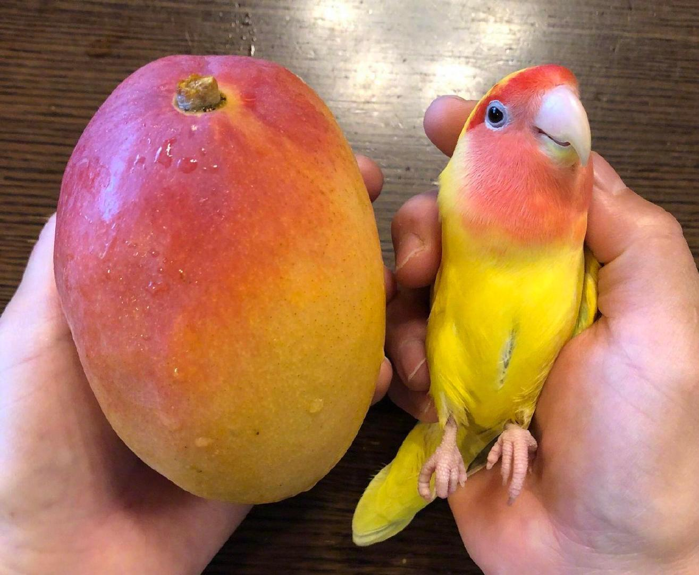
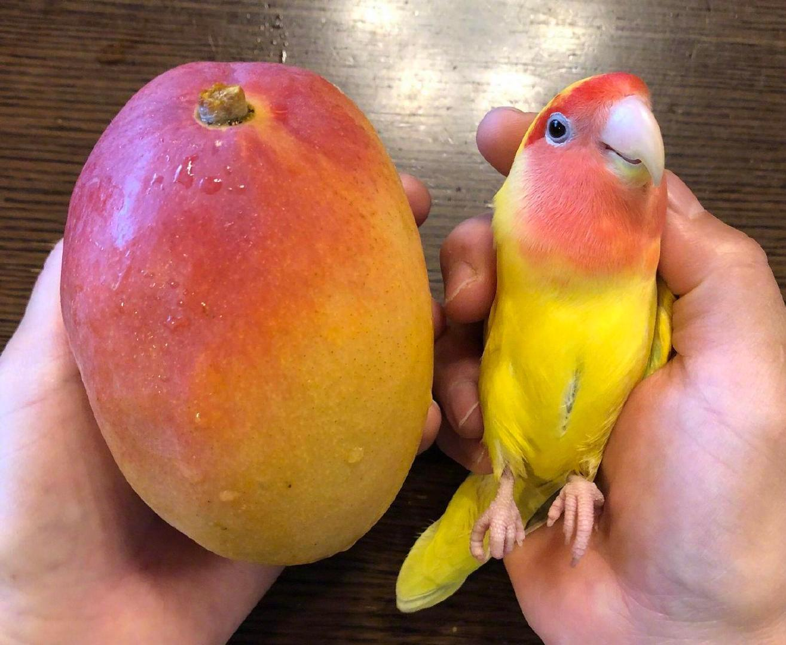

앵무
앵무
| 대형종 | 중형종 | 소형종 |
|---|---|---|
| 금강앵무(macaw) | 왕관앵무(Cockatiel) | 모란앵무(Lovebird) |
| 뉴기니아앵무(Eclectus parrot) | 로리키트(Lorikeet) | 사랑앵무(Budgerigar) |
| 대본청(Alexandrine Parrot) | 장미앵무(Rosella) | 사자나미(Barred Parakeet 또는 Lineolated Parakeet) |
| 아프리카회색앵무(African grey parrot) | 코뉴어(Conure) | 유리앵무(Pacific parrotlet) |
| 유황앵무(Sulphur-crested Cockatoo) | 카이큐(Caique) | 카카리키(Kakariki)/td> |
| 아마존 앵무 | 퀘이커(quaker) | |
| 카카포 | ||
| 케아 |